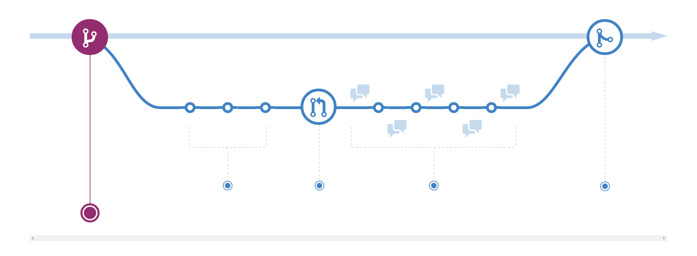

Python Programming for Geoscience
Course Organization
Four lecturers
- Hahn Sebastian
- Karel Wilfried
- Mandelburger Gottfried
- Paulik Christoph
How to get a grade
There will be two/three small projects.
- Short report
- Source code
- Short talk about the project with the lecturer.
Technical stuff
- We will use the Anaconda Python Distribution (Win, Linux, OSX)
- You can start the download/installation now.
Course Materials
- Materials (slides ,code examples, …) will be on Github. See the Readme there for more details.
- Exercise 1 will be on Github and might consist of several parts. (like Homework)
Version Control
Who of you has worked with version control
(CVS, SVN, Git …) ?

Git Basics

Do yourselves a favor and learn Git. It will make your lives easier.
There will be a lecture after the course in week 3.
Github
Github is a code hosting site which is the the most popular solution for hosting open source projects at the moment.
What is Programming
- Programming is breaking problems into simple steps.
- Simple steps a computer can understand.
- Think about giving directions to somebody.
Statement
- An instruction is called a statement
- e.g. Add two numbers together
- set variable to a value
Python
x = 1
Javascript
var x = 1;
C
int x = 1;
What is Python
Python is an easy to learn, powerful programming language.
– Python Tutorial first sentence
Developed by Guide van Rossum , early 1990s
- Benevolent Dictator For Life (BDFL) of the Python community.
- Worked at Google, now at Dropbox
- Named Python after Monthy Python
Language overview
- General purpose
- can write anything from websites (Youtube, Reddit…) to scientific code.
- High Level
- Strong abstraction from inner workings of the computer, e.g. no memory management. [wiki]
- Interpreted
- executes instructions directly, no compilation [wiki]
- Multi paradigm
- Object oriented, functional, imperative or procedural styles are supported
Language overview
- Dynamically typed
- Variable types are checked during execution.
- Strongly typed
- a variable has a specific type
- Modular
- Python modules must be imported to be used
- Multi Platform
- Works on Linux, Mac OS, Windows, …
- Batteries included
- Powerful standard library (e.g. file reading, URL parsing …)
Different versions
Currently Python 2.7 and 3.5 are the latest versions.
Python 3 introduced some incompatible changes. Nowadays most 3rd party packages should work on both versions.
List of most popular packages and Python 3 status
We use Python 3.4 in this course.
Getting started
- Install Anaconda in a directory of your choice. You can set it as the default if you do not have other Python installations on your system.
- Today: Open Anaconda Python command prompt and start typing
- Next lecture: For longer scripts you will need a text editor or a Python IDE
- (non complete) list on Website of the Course
- Python files have
.pyextension
Command prompt
- Type
pythonto enter the Python interpreter exit()orCtrl-Dto quit the interpreter- every press of the return key executes a statement
print("Hello World!")
Hello World!
Python Syntax
# set variable x to 1 x = 1 if x == 1: """ This condition checks if x is one and prints it to stdout """ print("x is one")
Use spaces if possible, be consistent in your code.
Check the Python Style Guide PEP8
Variables
Variables can be assigned without type declaration.
a = 1 b = 2.8 c = "text" print("a is", a) print("b is", a) print("c is", c) c = a print("c is", c)
('a is', 1)
('b is', 1)
('c is', 'text')
('c is', 1)
Variable types can be changed. Careful!
Variables are case sensitive
You can not use one of the predefined keywords. Should also not use python builtins.
var1 = 5 Var1 = 6 print(var1, Var1) import keyword print(keyword.kwlist)
(5, 6) ['and', 'as', 'assert', 'break', 'class', 'continue', 'def', 'del', 'elif', 'else', 'except', 'exec', 'finally', 'for', 'from', 'global', 'if', 'import', 'in', 'is', 'lambda', 'not', 'or', 'pass', 'print', 'raise', 'return', 'try', 'while', 'with', 'yield']
Python as a calculator
width = 20 height = 5 * 9 # calculate rectangular area rect_area = width * height print("Rectangular Area is", rect_area) # calcualte area of square square_area = width ** 2 print("Square area is", square_area)
('Rectangular Area is', 900)
('Square area is', 400)
Data Types
These are some basic data types:
integer = 1 float_number = 1.345 complex_number = 3 + 4j string = "a text string" a_list = [1, 1.34, string] a_tuple = (1, 1.34, string) # immutable list a_set = set("mama") # list of unique items a_dict = {'jan': 1, 'feb': 2} a_boolean = True none_type = None
Integers and Floats
print(1+4) print(type(1+4)) print(type(1+4.)) # automatic conversion of resulting data type
5 <type 'int'> <type 'float'>
# float and integer division # this is different in Python 2 print("12 / 7 really is", 12/7.) print(type(12/7.)) print("12 / 7 is", 12//7) print(type(12//7))
('12 / 7 really is', 1.7142857142857142)
<type 'float'>
('12 / 7 is', 1)
<type 'int'>
Comparisons
#comparison print("is 7 less than 5?" , 7<5) print("is 5 less than 7?" , 7>5) print("is 5 less or equal 5?" , 5<=5)
('is 7 less than 5?', False)
('is 5 less than 7?', True)
('is 5 less or equal 5?', True)
Strings
s1 = "Monthy" s2 = 'Python' #single quotes are also fine # joining string can be done in different ways print(s1+s2, s1*3, ";".join([s1, s2]))
('MonthyPython', 'MonthyMonthyMonthy', 'Monthy;Python')
# sometimes double quotes are necessary print("This wouldn't work with single quotes") # or the ' has to be escaped using \ print('Escaping "wouldn\'t" also works')
This wouldn't work with single quotes Escaping "wouldn't" also works
String slicing
- slice syntax is [start:stop:step]
- start is inclusive, stop is exclusive
s = "0123456789" print(s[1:4]) print(s[3:8]) print(s[-1]) print(s[-6:-3]) print(s[0:5:2]) print("negative step reverts", s[::-1])
123
34567
9
456
024
('negative step reverts', '9876543210')
Lists
winter = ['jan', 'feb'] spring = ['apr', 'may', 'jun'] summer = ['jul', 'aug', 'sep'] autumn = ['oct', 'nov', 'dec'] # create one list containing all the elements months = winter + spring + summer + autumn print("List of months", months) # create a nested list, list of seasons seasons = [winter, spring, summer, autumn] print("List of seasons", seasons)
List of months ['jan', 'feb', 'apr', 'may', 'jun', 'jul', 'aug', 'sep', 'oct', 'nov', 'dec'] List of seasons [['jan', 'feb'], ['apr', 'may', 'jun'], ['jul', 'aug', 'sep'], ['oct', 'nov', 'dec']]
What happens if we add the missing month of March?
winter.append('mar') print("Winter is now:", winter) print("List of months", months) print("List of seasons", seasons)
('Winter is now:', ['jan', 'feb', 'mar'])
('List of months', ['jan', 'feb', 'apr', 'may', 'jun', 'jul', 'aug', 'sep', 'oct', 'nov', 'dec'])
('List of seasons', [['jan', 'feb', 'mar'], ['apr', 'may', 'jun'], ['jul', 'aug', 'sep'], ['oct', 'nov', 'dec']])
Lists are generally stored as references -> the values are not copied.
List manipulation and slicing
months.insert(2, 'mar') # insert a element before index 2 print(months) print(months[::2]) # slicing works the same as with strings print(months[8:11])
['jan', 'feb', 'mar', 'apr', 'may', 'jun', 'jul', 'aug', 'sep', 'oct', 'nov', 'dec'] ['jan', 'mar', 'may', 'jul', 'sep', 'nov'] ['sep', 'oct', 'nov']
List manipulation
li = [1, 4, 8.33, 3.6, 19, 12] print(li.index(3.6)) # get the index of a element print(li[li.index(3.6)]) # this index can be used to address the list li.sort() # sort the list print(li) #remove elements from list del li[2] print("removed index 2:", li) li.pop(2) print("removed index 2 again:", li)
3
3.6
[1, 3.6, 4, 8.33, 12, 19]
('removed index 2:', [1, 3.6, 8.33, 12, 19])
('removed index 2 again:', [1, 3.6, 12, 19])
for even more list related functions see the documentation
Sets - unique elements and set operations
m, p = set('mama'), set('papa') print(m) print(p) print("Union, m or p", m | p) print("Intersection, m and p", m & p) print("Difference, m minus p", m - p) print("Symetric Difference", m ^ p) # elements in either one but not both sets
set(['a', 'm'])
set(['a', 'p'])
('Union, m or p', set(['a', 'p', 'm']))
('Intersection, m and p', set(['a']))
('Difference, m minus p', set(['m']))
('Symetric Difference', set(['p', 'm']))
More information in the documentation
Dictionaries
Key value pairs of any data type. Not ordered.
d = {'integer': 7, 'string': "test", 1: [1, 2, 3]} print(d) print(d[1]) print(d['integer']) # get a value by the key print(d.keys()) # list of the keys print('integer' in d) # test for presence of key
{'integer': 7, 'string': 'test', 1: [1, 2, 3]}
[1, 2, 3]
7
['integer', 'string', 1]
True
# keys can be any hashable(unique) object d1 = {(1, 2): "tuple with 1 and 2", (1, 3): "tuple with 1 and 3"} print(d1[(1, 2)]) # add element to dictionary d1['additional element'] = "I am new" print(d1) # delete it again del d1['additional element'] print(d1)
tuple with 1 and 2
{(1, 2): 'tuple with 1 and 2', 'additional element': 'I am new', (1, 3): 'tuple with 1 and 3'}
{(1, 2): 'tuple with 1 and 2', (1, 3): 'tuple with 1 and 3'}
Dictionary update
d1 = {"one": 1, "two": 2} d2 = {"two": "II", "three": "III"} d1.update(d2) print(d1)
{'three': 'III', 'two': 'II', 'one': 1}
answer_dict = {True: 'yes', False: 'no'} print("is 7 less than 5?" , answer_dict[False]) print("is 7 less than 5?" , answer_dict[7<5])
('is 7 less than 5?', 'no')
('is 7 less than 5?', 'no')
Homework
- Try out a few text editors / IDE's and choose one you like.
- (non complete) list on Website of the Course